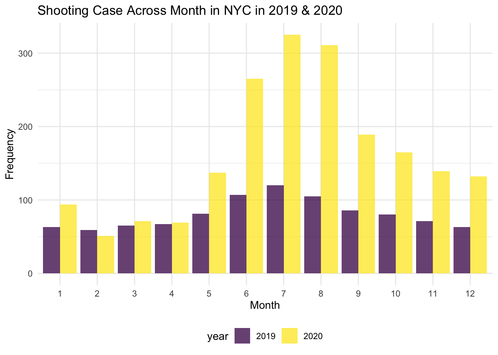
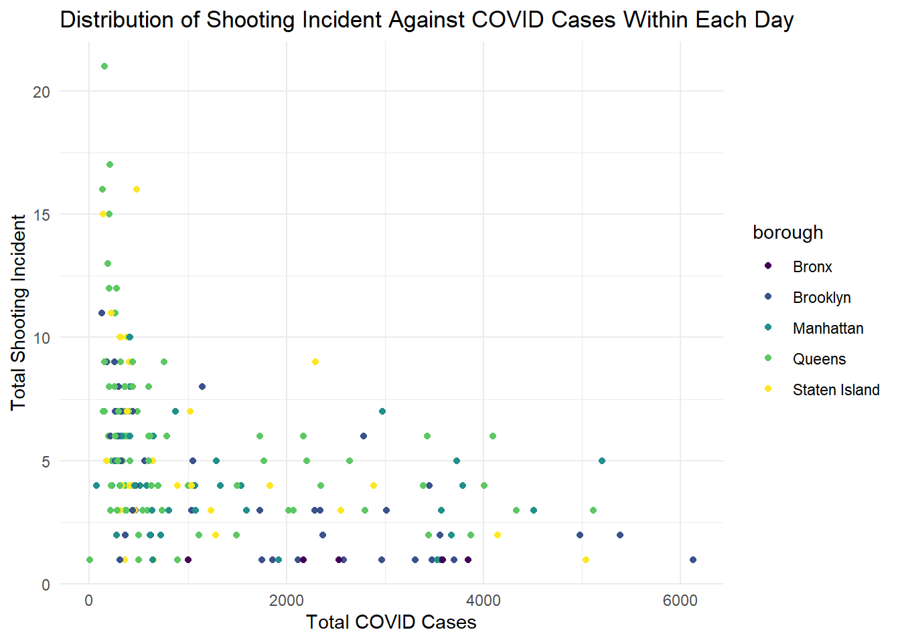

P8105_final_project
Hao Zheng (hz2770), Peilin Zhou (pz2281), Xiao Ma(xm2276), Yida Wang(yw3774), Ruilian Zhang (rz2570)
11/11/2021
library(tidyverse)
library(rvest)
library(knitr)
theme_set(theme_minimal() + theme(legend.position = "bottom"))
options(
ggplot2.continuous.colour = "viridis",
ggplot2.continuous.fill = "viridis"
)
scale_colour_discrete = scale_colour_viridis_d
scale_fill_discrete = scale_fill_viridis_dLoad the dataset NYPD shooting incident
shooting =
read_csv("./data/NYPD_Shooting.csv") %>%
janitor::clean_names()## Rows: 23585 Columns: 19## ── Column specification ────────────────────────────────────────────────────────
## Delimiter: ","
## chr (10): OCCUR_DATE, BORO, LOCATION_DESC, PERP_AGE_GROUP, PERP_SEX, PERP_R...
## dbl (7): INCIDENT_KEY, PRECINCT, JURISDICTION_CODE, X_COORD_CD, Y_COORD_CD...
## lgl (1): STATISTICAL_MURDER_FLAG
## time (1): OCCUR_TIME##
## ℹ Use `spec()` to retrieve the full column specification for this data.
## ℹ Specify the column types or set `show_col_types = FALSE` to quiet this message.check null
shooting %>%
summarise_all(~ sum(is.na(.)))## # A tibble: 1 × 19
## incident_key occur_date occur_time boro precinct jurisdiction_code
## <int> <int> <int> <int> <int> <int>
## 1 0 0 0 0 0 2
## # … with 13 more variables: location_desc <int>, statistical_murder_flag <int>,
## # perp_age_group <int>, perp_sex <int>, perp_race <int>, vic_age_group <int>,
## # vic_sex <int>, vic_race <int>, x_coord_cd <int>, y_coord_cd <int>,
## # latitude <int>, longitude <int>, lon_lat <int>For col boro
shooting = shooting %>%
mutate(boro = as.factor(boro)) %>%
mutate(location_desc = replace_na(location_desc, "NONE")) %>%
mutate(location_desc = as.factor(location_desc)) %>%
mutate(location_desc = fct_relevel(location_desc, c("NONE", "MULTI DWELL - PUBLIC HOUS", "MULTI DWELL - APT BUILD", "PVT HOUSE", "GROCERY/BODEGA", "BAR/NIGHT CLUB", "HOSPITAL", "COMMERCIAL BLDG", "DEPT STORE", "GAS STATION", "HOTEL/MOTEL", "SMALL MERCHANT", "RESTAURANT/DINER", "CLOTHING BOUTIQUE", "FACTORY/WAREHOUSE", "SOCIAL CLUB/POLICY LOCATI"))) %>%
mutate(location_desc = recode(location_desc,
"NONE" = "none",
"MULTI DWELL - PUBLIC HOUS" = "public_house",
"MULTI DWELL - APT BUILD" = "apt_building",
"PVT HOUSE" = "pirvate_house",
"GROCERY/BODEGA" = "grocery_bodega",
"BAR/NIGHT CLUB" = "bar_club",
"HOSPITAL" = "hospital",
"COMMERCIAL BLDG" = "commercial",
"DEPT STORE" = "dept_store",
"GAS_STATION" = "gas_station",
"HOTEL/MOTEL" = "hotel",
"SMALL MERCHANT" = "merchant",
"RESTAURANT/DINER" = "restaurant",
"CLOTHING BOUTIQUE" = "clothing",
"FACTORY/WAREHOUSE" = "factory",
"SOCIAL CLUB/POLICY LOCATI" = "club"
)) %>%
separate(occur_date, into = c("month", "day", "year")) %>%
mutate(month = as.numeric(month)) %>%
arrange(year, month) %>%
# mutate(month = month.name[month]) %>%
mutate(year = as.character(year)) %>%
mutate(boro = tolower(boro)) %>%
mutate(boro = if_else(boro == "staten island", "staten_island", boro)) %>%
rename(borough = boro) %>%
mutate(date = str_c(month, day, year, sep = "/")) %>%
select(incident_key, date, everything())Next, clean the COVID-19 case count data
Importing COVID-19 case count data
covid_counts = read.csv("./data/COVID19_data.csv", sep = ";") %>% as_tibble()The clean dataset contains only day-by-day COVID-19 case count for each borough and the total case count in NYC of a particular day.
clean_covid = covid_counts %>%
janitor::clean_names() %>%
rename(date = date_of_interest) %>%
select(date, contains("case_count")) %>%
select(-contains(c("probable_case_count", "case_count_7day_avg", "all_case_count_7day_avg"))) %>%
separate(date, into = c("month", "day", "year")) %>%
mutate_all(as.character) %>%
mutate_if(is.character, gsub, pattern = ",", replacement = "") %>%
mutate_if(is.character, as.numeric) %>%
pivot_longer(
cols = bx_case_count:si_case_count,
names_to = "borough",
values_to = "borough_case_count"
) %>%
mutate(borough = gsub("_case_count", "", borough)) %>%
mutate(borough = recode(borough, "bx" = "bronx","bk" = "brooklyn","mn" = "manhattan","si" = "staten_island","qn" = "queens")) %>%
relocate(case_count, .after = borough_case_count) %>%
rename(total_case_count = case_count) %>%
mutate(date = str_c(month, day, year, sep = "/")) %>%
select(date, everything())
head(clean_covid)## # A tibble: 6 × 7
## date month day year borough borough_case_count total_case_count
## <chr> <dbl> <dbl> <dbl> <chr> <dbl> <dbl>
## 1 2/29/2020 2 29 2020 bronx 0 1
## 2 2/29/2020 2 29 2020 brooklyn 0 1
## 3 2/29/2020 2 29 2020 manhattan 1 1
## 4 2/29/2020 2 29 2020 queens 0 1
## 5 2/29/2020 2 29 2020 staten_island 0 1
## 6 3/1/2020 3 1 2020 bronx 0 0Covid and shooting relations
Note: The date of shooting and covid datasets only overlap on February-December 2020, so we do the analysis base on the overlap.
shooting_mini =
shooting %>%
filter(year == "2020") %>%
select(c("date", "incident_key", "borough"))
shooting_covid =
merge(x = shooting_mini, y = clean_covid, by = c("date", "borough")) %>%
relocate("date", "month", "day", "year", everything()) %>%
group_by(date) %>%
add_count(borough, name = "borough_n_victim") %>% # victim number equals to the count of incident_key (includind duplicate)
distinct() %>%
add_count(borough, name = "borough_n_shooting") %>% # shooting number equals to the count of distinct incident_key
select(-incident_key) %>%
distinct() %>%
add_count(date, wt = borough_n_victim, name = "total_n_victim") %>%
add_count(date, wt = borough_n_shooting, name = "total_n_shooting") %>%
mutate(
borough = recode(borough,
"bronx" = "Bronx",
"brooklyn" = "Brooklyn",
"manhattan" = "Manhattan",
"queens" = "Queens",
"staten_island" = "Staten Island")
)First find the association between total covid cases and total shootings.
shooting_covid %>%
ggplot(aes(x = total_case_count, y = total_n_shooting, group = borough, color = borough)) +
geom_point() +
labs(
title = "Distribution of shooting cases against Covid cases within each day",
x = "Total Covid cases",
y = "Total shooting cases"
)
See separately for each borough:
shooting_covid %>%
ggplot(aes(x = borough_case_count, y = borough_n_shooting, group = borough, color = borough)) +
geom_point() +
labs(
title = "Distribution of shooting cases against Covid cases within each day",
x = "Total Covid cases",
y = "Total shooting cases"
) +
facet_wrap(~ borough)We can see that for each borough, there is a general trend that higher number of shooting cases is associated with fewer covid cases, whereas the number of shooting cases decreases when covid case increases. This trend does not manifest in Staten Island, which may due to the limited size of data.
Then look at the association between total covid cases and total victims in shooting.
shooting_covid %>%
ggplot(aes(x = total_case_count, y = total_n_victim, group = borough, color = borough)) +
geom_point() +
labs(
title = "Distribution of shooting victims against Covid cases within each day",
x = "Total Covid cases",
y = "Total shooting cases"
)
We can also see it separately by borough:
shooting_covid %>%
ggplot(aes(x = borough_case_count, y = borough_n_victim, group = borough, color = borough)) +
geom_point() +
labs(
title = "Distribution of shooting victims against Covid cases within each day",
x = "Total Covid cases",
y = "Total shooting cases"
) +
facet_wrap(~ borough)
Then explore by month.
shooting_covid %>%
# mutate(month = month.name[month]) %>%
ggplot(aes(x = total_case_count, y = total_n_victim, group = month, color = month)) +
geom_point() +
labs(
title = "Distribution of shooting victims against Covid cases within each day",
x = "Total Covid cases",
y = "Total shooting cases"
) +
facet_wrap(~ month) We can see from the above plot that there is no general pattern of the association between total shooting and total covid cases. But for the months in the middle of the year, especially in June, July and August, we can see that the number shooting cases is high when there are few covid cases, in which the inner logic is deserved to be explored.
Fit a linear regression model for total covid case with total shooting as predictor.
total_lm = lm(total_n_shooting ~ total_case_count, data = shooting_covid)
broom::tidy(total_lm) %>%
knitr::kable()| term | estimate | std.error | statistic | p.value |
|---|---|---|---|---|
| (Intercept) | 7.1159313 | 0.1860307 | 38.25137 | 0 |
| total_case_count | -0.0011568 | 0.0001142 | -10.13164 | 0 |
set.seed(100)
par(mfrow = c(2,2))
plot(total_lm)
We can see from the Residuals vs Fitted plot that the residuals is not equally distributed around the 0 horizontal line. In fact, the residuals has a pattern of decrease, indicating that the model has high goodness of fit, but violates the assumption of the normal distribution of the residual. Besides, from the Normal Q-Q plot we can see that most of the data fit the line when the theoretical quantile is under 2, indicating the data might have a normal distribution in a certain range.
Then do it with total victims as predictor.
total_lm = lm(total_n_victim ~ total_case_count, data = shooting_covid)
broom::tidy(total_lm) %>%
knitr::kable()| term | estimate | std.error | statistic | p.value |
|---|---|---|---|---|
| (Intercept) | 9.0144130 | 0.2531176 | 35.613542 | 0 |
| total_case_count | -0.0015452 | 0.0001554 | -9.946264 | 0 |
set.seed(100)
par(mfrow = c(2,2))
plot(total_lm)